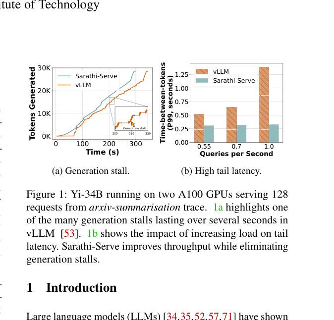
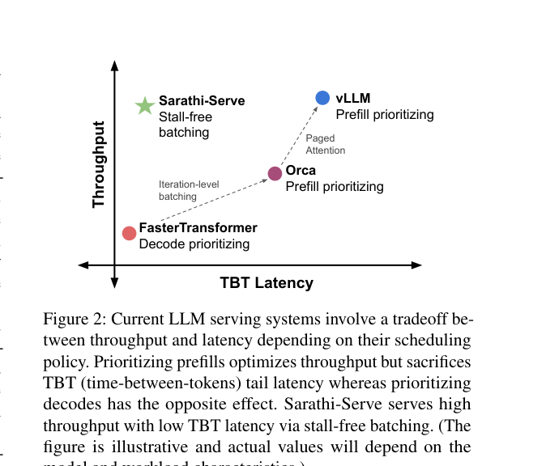
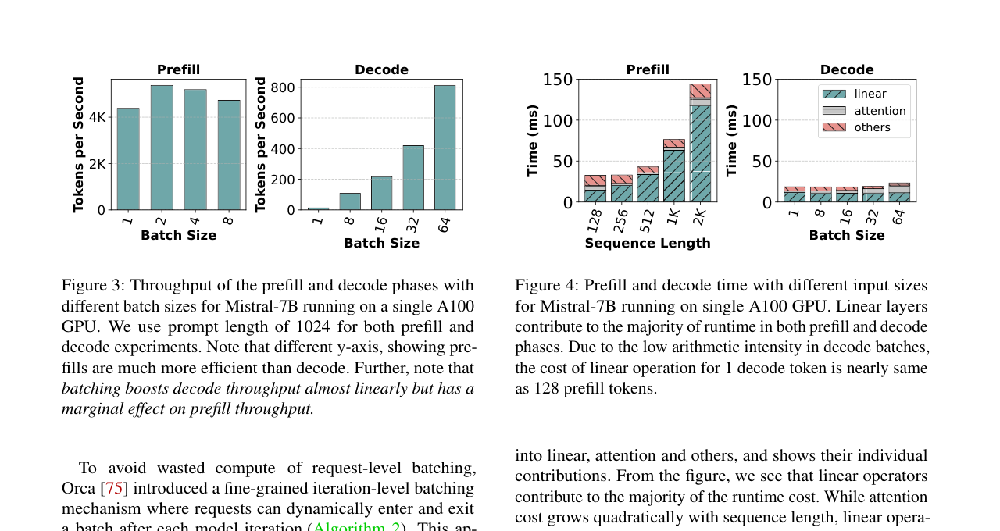

Sarathi-Serve：用 Chunked-Prefills 驯服 LLM 推理的吞吐量-延迟权衡：中文精读与校订
这篇论文做什么？
不拆分 P/D 机器，而是把长 prefill 切成计算量接近的块，在每轮 decode batch 中只搭载有限 prefill 工作，形成 stall-free、形状更均匀的调度。
- 问题：优先 decode 会饿死 prefill，优先 prefill 又会让流式 decode 产生长停顿。
- 方法：chunked prefill、decode-maximal batching 与 stall-free schedule。
- 结果：在尾延迟约束下，单/多 GPU serving capacity 提高 2.6×–5.6×。
校订说明：本页按原论文的论证顺序重写术语与因果关系；图均裁自论文原图，数据结论保留论文适用条件，不把峰值结果泛化为固定加速。
摘要。每个 LLM 服务请求经历两个阶段：prefill（处理整个输入 prompt 并生成首个输出 token）和 decode（逐个生成剩余输出 token）。Prefill 迭代延迟高但因并行处理 prompt 能饱和 GPU 算力；decode 迭代延迟低但计算利用率也低。批处理多个请求时，prefill 和 decode 迭代的交错使同时实现高吞吐和低延迟变得困难。论文提出 Sarathi-Serve，通过 chunked-prefills（将 prefill 请求拆分为近似等大的块）和 stall-free scheduling（在不暂停进行中 decode 的情况下将新请求加入 batch）来应对这一权衡。均匀的 batch 还缓解了迭代间的不平衡，减少了流水线气泡。在 Mistral-7B 上实现 2.6 倍、在 Yi-34B 上实现 3.7 倍的 serving capacity 提升，在 Falcon-180B 流水线并行部署中实现 5.6 倍端到端提升。
1 引言
LLM 推理的吞吐量可通过批处理提升，但现有系统在吞吐量和延迟之间面临根本权衡。论文将现有调度器分为两类。
1.1 Decode-Prioritizing 调度
传统请求级批处理系统（如 FasterTransformer）采用 decode-prioritizing 策略：先计算 batch 中所有请求的 prefill，再调度它们的 decode，直到最后一个请求完成 decode 才允许新 prefill 进入。这种策略优化了 TBT（time-between-tokens）——新请求不影响进行中请求的 decode。但严重牺牲吞吐量：即使部分请求提前完成，执行仍以缩减的 batch size 继续直到最后请求结束。
1.2 Prefill-Prioritizing 调度
Orca 引入迭代级批处理（iteration-level batching），请求可在单迭代粒度动态进出 batch。Orca 和 vLLM 等系统将其与 prefill-prioritizing 调度结合：只要 GPU 内存可用就急切调度 prefill。这提升了吞吐量（先算 prefill 使后续 decode 在大 batch size 下运行），但导致高延迟——prefill 可能耗时很长（取决于 prompt 长度），会暂停进行中的 decode，产生论文所称的generation stall（生成停顿）。实验中 vLLM 的 generation stall 可持续数秒。
2 Chunked-Prefills
Sarathi-Serve 的第一个关键思想是 chunked-prefills：将一个 prefill 请求拆分为近似等大的 compute-sized 块，在多个迭代中分块计算 prompt 的 prefill 阶段。每个迭代只处理 prompt token 的一个子集。这样每个迭代的计算量被限制在预设的 chunk size 附近，使迭代延迟近乎独立于输入 prompt 的总长度。
Chunked-prefills 打破了 prefill 迭代延迟与 prompt 长度的耦合：无论 prompt 有 128 还是 8192 个 token，每个迭代都只处理固定数量，延迟可控。
3 Stall-Free Scheduling
第二个关键思想是 stall-free scheduling：允许新请求加入运行中的 batch 而不暂停进行中的 decode。具体做法是构建一个 batch，将所有进行中的 decode 与一个或多个来自新请求的 prefill chunk 合并，使 batch 达到预设的 chunk size。
这构建了混合 batch（同时包含 prefill 和 decode token），每个 batch 的计算量近似均匀。关键区别在于：Sarathi-Serve 在每次迭代中限制 prefill token 数量同时允许新请求加入运行中的 batch。这不仅限制了每次迭代的延迟，还使其近乎独立于输入 prompt 总长度，从而最小化新 prefill 对进行中 decode 的 TBT 影响。
4 流水线并行与均匀 Batch
在流水线并行（pipeline parallelism）部署中，标准微批调度因 LLM 推理混合不同长度 prefill 和 decode 而产生流水线气泡——不同微批的运行时间差异巨大，浪费 GPU 周期。Sarathi-Serve 的混合 batch 具有近似均匀的计算需求，使得基于均匀微批的调度能显著减少流水线气泡，提高 GPU 利用率。
这一点对于跨多节点的可扩展部署尤其重要。张量并行（TP）在高速互连（如 DGX A100）下可支持最多 8 个 GPU，但在没有超集群互连时延迟过高。流水线并行（PP）是商品网络上的替代方案，而 Sarathi-Serve 的均匀 batch 使 PP 部署更加高效。
5 实验评估
评估覆盖多种模型和硬件配置：Mistral-7B 单 A100、Yi-34B 双 A100（2-way TP）、LLaMA2-70B 8x A40、Falcon-180B 8x A100（2-way PP + 4-way TP）。
主要结果：Yi-34B 在不同 SLO 目标下 serving capacity 提升 3.7 倍；Mistral-7B 提升 2.6 倍；Falcon-180B 流水线并行部署端到端 serving capacity 提升 5.6 倍。Sarathi-Serve 同时消除了 generation stall，在所有负载水平下保持低 TBT 尾延迟。
6 与其他系统的对比
论文将 Splitwise 和 DistServe 归为第三类"解耦"调度器——它们将 prefill 和 decode 分配到不同 GPU。解耦消除了干扰但引入跨 GPU 通信开销和资源碎片。Sarathi-Serve 选择在相同 GPU 上通过 chunked-prefills 和 stall-free scheduling 在迭代级别控制干扰，无需跨 GPU 传输 KV cache，更适合资源受限场景。
7 局限与选题启发
Sarathi-Serve 的 chunk size 是一个需要调优的超参数：过小则 prefill 被过度拆分增加开销，过大则退化为 prefill-prioritizing 的 generation stall 问题。最优 chunk size 取决于模型大小、硬件配置和 SLO 要求。此外，stall-free scheduling 假设 decode 和 prefill chunk 可以自由合并，但当 GPU 内存接近上限时，合并决策仍受 KV cache 容量约束。
对本仓库方向的意义。Sarathi-Serve 展示了在不解耦 prefill/decode 的前提下，通过细粒度迭代调度控制干扰的可行性。在 agentic workflow 中，多个 agent 的请求可能在同一 GPU 上交错执行，Sarathi-Serve 的 stall-free 思想可以直接用于工作流调度器，避免一个 agent 的长 prefill 阻塞其他 agent 的 decode，从而保证工作流的端到端延迟。
公式与目标函数
每轮先容纳所有可运行 decode，再用剩余 token budget 填入至多一个或若干 prefill chunk。chunk 上限 C 控制单轮执行时间，从而限制 token 间停顿。
原论文图解



证据边界与校订结论
论文把容量定义为满足尾 TTFT/TBT SLO 的最大请求率。chunked prefill 的价值不只是降低单次 prefill 延迟，还让每轮 batch 的 token 数更稳定，特别能减少流水线并行的 stage imbalance。具体提升随 chunk size、模型、并行方式和 SLO 变化。
参考说明
参考文献保留在原 PDF 中。本文译稿覆盖摘要、两类调度器分析、chunked-prefills、stall-free scheduling、流水线并行优化和实验结果。